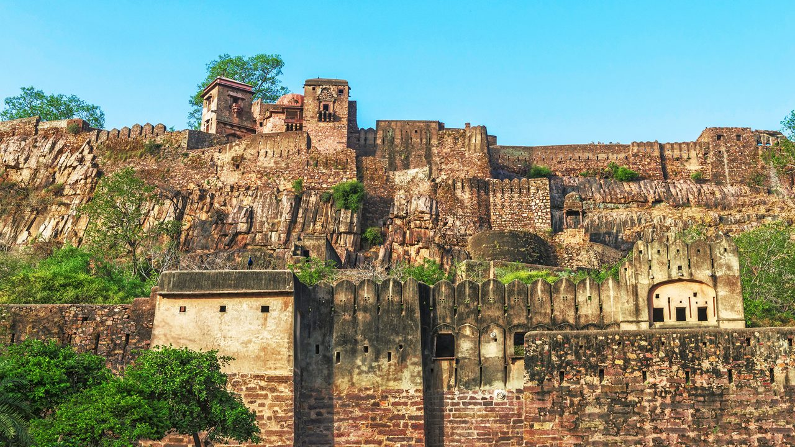
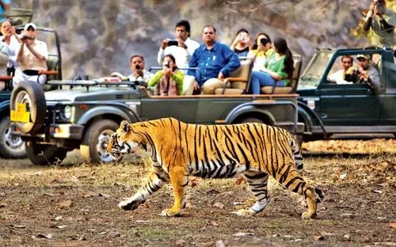

Welcome to Ranthambore National Park
Ranthambore National Park, located in the Sawai Madhopur district of Rajasthan, India, is one of the largest and most renowned national parks in Northern India. Spanning approximately 1,334 square kilometers, this magnificent tiger reserve is celebrated worldwide for exceptional tiger sighting opportunities and rich biodiversity managed by the Rajasthan Forest Department.
Established as a wildlife sanctuary in 1955 and declared a national park in 1980, Ranthambore became part of Project Tiger in 1973. The park's unique landscape features dry deciduous forests, rocky terrain, ancient ruins, and several lakes, creating an ideal habitat for the majestic Royal Bengal Tiger and diverse wildlife species.
What makes Ranthambore safari truly exceptional is the high probability of spotting tigers in their natural habitat during daylight hours. Unlike many tiger reserves where sightings are rare, Ranthambore's open terrain and accessible safari zones provide visitors with unforgettable wildlife encounters that make it India's premier destination for tiger tourism.
Ranthambore Fort: A UNESCO World Heritage Site

The ancient Ranthambore Fort, situated within the national park boundaries, is a magnificent testament to Rajasthan's rich heritage. Built in the 10th century by the Chauhan dynasty, this hill fort stands majestically at 700 feet above the surrounding terrain, offering panoramic views of the entire park landscape.
In 2013, Ranthambore Fort was designated a UNESCO World Heritage Site as part of the "Hill Forts of Rajasthan" series, recognizing its historical, architectural, and cultural significance. The fort complex features ancient temples, including the famous Ganesh Temple where devotees send wedding invitations seeking blessings, royal palaces, massive gateways, and water reservoirs that showcase medieval engineering brilliance.
The fort's historical importance extends beyond architecture—it witnessed numerous battles, served as a strategic military stronghold, and played a crucial role in Rajput history. Today, the Ranthambore Fort attracts history enthusiasts and photographers who combine heritage exploration with wildlife safari experiences. Tigers are occasionally spotted roaming the fort ruins, creating a unique blend of history and wildlife tourism.
Visitors can explore the fort during morning hours before safari timings. The trek to the fort offers excellent opportunities for bird watching and panoramic photography of the Ranthambore National Park landscape below.
Ranthambore Safari Zones: Complete Guide (Zone 1 to Zone 10)
Ranthambore National Park is divided into 10 distinct safari zones, each offering unique landscapes, wildlife diversity, and tiger sighting opportunities. Understanding these zones helps visitors choose the best Ranthambore safari zone for their wildlife experience.
🌲 Zone 1 - Core Safari Zone
High Tiger DensityZone 1 is considered one of the best zones for tiger sighting in Ranthambore safari. This core zone features diverse terrain including lakes, dense forests, and grasslands. Famous landmarks include Padam Talao (the largest lake), Jogi Mahal, and excellent tiger habitats. Zone 1 safari offers high chances of spotting tigers, leopards, and marsh mugger crocodiles.
🌳 Zone 2 - Prime Tiger Territory
Excellent SightingsZone 2 surrounds the historic Ranthambore Fort and offers spectacular wildlife photography opportunities. This zone features rocky landscapes, ancient ruins, and multiple water bodies. Tigers frequently use the fort area for patrolling, making Zone 2 safari ideal for capturing unique shots of tigers against historical backdrops.
🏞️ Zone 3 - Scenic Safari Route
Core ZoneZone 3 is renowned for beautiful lakes including Padam Talao and Malik Talao. This core zone provides excellent tiger sighting opportunities, especially during summer months when animals gather around water sources. Zone 3 Ranthambore safari is popular among photographers for its scenic landscapes and diverse wildlife including sloth bears and sambars.
🦌 Zone 4 - Wildlife Corridor
Good Tiger PresenceZone 4 serves as an important wildlife corridor connecting different areas of the park. This zone features dense vegetation, grasslands, and several nallahs (seasonal streams). Zone 4 safari offers good chances of tiger encounters along with sightings of leopards, wild boars, and various deer species in their natural habitat.
🌾 Zone 5 - Grassland Safari
High VisibilityZone 5 is characterized by open grasslands and scattered trees, providing excellent visibility for wildlife spotting. This core zone features Berda, Singh Dwar, and several seasonal water bodies. Zone 5 Ranthambore safari is particularly favored for tiger tracking as the open terrain allows for better animal observation and photography.
🌿 Zone 6 - Buffer Safari Zone
Less CrowdedZone 6 is a buffer zone offering a quieter safari experience with fewer vehicles. This zone features Nal Ghati, dense forests, and wildlife corridors. While tiger sightings are less frequent compared to core zones, Zone 6 safari provides opportunities to see leopards, nilgai, chinkara, and diverse bird species in peaceful surroundings.
🦅 Zone 7 - Bird Watching Zone
Buffer ZoneZone 7 is ideal for bird watching enthusiasts and those seeking peaceful wildlife experiences. This buffer zone features varied terrain, forest patches, and grazing grounds. Zone 7 Ranthambore safari offers sightings of hyenas, jackals, and over 300 bird species including eagles, owls, and migratory waterfowl.
🏔️ Zone 8 - Remote Wilderness
Buffer ZoneZone 8 provides access to remote wilderness areas with rocky outcrops and dense vegetation. This buffer zone safari offers occasional tiger sightings and regular encounters with leopards, sloth bears, and smaller carnivores. Zone 8 is perfect for visitors seeking off-the-beaten-path wildlife experiences.
🐆 Zone 9 - Leopard Territory
Buffer ZoneZone 9 is known for leopard sightings and diverse wildlife beyond tigers. This zone features hilly terrain, water bodies, and mixed forest. Zone 9 Ranthambore safari attracts nature enthusiasts interested in exploring the park's complete biodiversity including rare birds, reptiles, and smaller mammals.
🌄 Zone 10 - Extended Safari
Buffer ZoneZone 10 is the newest addition to Ranthambore safari zones, offering extended wildlife exploration opportunities. This buffer zone provides a less commercialized safari experience with chances to see diverse wildlife, pristine landscapes, and seasonal wetlands that attract migratory birds during winter months.
💡 Ranthambore Safari Zone Booking Tips
- Zones 1, 2, 3, 4, and 5 are core zones with highest tiger sighting probability
- Zones 6, 7, 8, 9, and 10 are buffer zones offering quieter safari experiences
- Zone allocation is done by Rajasthan Forest Department
- Book Ranthambore safari at least 30-90 days in advance during peak season
- Morning safaris (6:30 AM - 10:00 AM) often provide better tiger sighting opportunities
Tigers of Ranthambore: Famous Tigers and Sighting Information

Ranthambore National Park is home to approximately 75-80 Royal Bengal Tigers (as per recent census data by Rajasthan Forest Department), making it one of India's premier destinations for tiger sighting. The park's unique ecosystem and open terrain provide exceptional opportunities to observe these magnificent predators in their natural habitat.
🐅 Famous Tigers of Ranthambore
Ranthambore has produced several legendary tigers that have become icons of wildlife conservation:
Machli (T-16) - The Queen of Ranthambore
Known as the "Lady of the Lakes," Machli was the most photographed tigress in the world. She lived an extraordinary 19 years and became a symbol of Ranthambore's conservation success. Her legacy continues through her descendants who now dominate various zones.
Ustad (T-24) - The Fort Tiger
Famous for his massive size and dominance around Ranthambore Fort, Ustad became one of the park's most popular tigers. His powerful presence and photogenic nature made him a favorite among wildlife photographers on Ranthambore safari tours.
Arrowhead (T-84) - The Dominant Male
Named for the distinctive arrow-shaped mark on his face, Arrowhead controls prime territories in Ranthambore. He is frequently sighted during safari tours and represents the current generation of powerful male tigers.
🎯 Tiger Sighting Chances in Ranthambore Safari
Ranthambore offers among the highest tiger sighting probabilities in India:
- Core Zones (1-5): 60-70% chance of tiger sighting during peak season
- Buffer Zones (6-10): 30-40% chance, with opportunities for other wildlife
- Best sighting times: Early morning safaris and late afternoon sessions
- Summer months (April-May): Highest visibility as tigers frequent water bodies
- Winter season (November-February): Pleasant weather with good sighting opportunities
🔍 Tiger Behavior and Tracking
Understanding tiger behavior enhances your Ranthambore safari experience. Tigers are most active during cooler hours, often seen patrolling territories, hunting prey like sambar and spotted deer, or resting near water sources. Experienced safari guides and Rajasthan Forest Department naturalists use alarm calls from langurs, deer, and peacocks to track tiger movements, significantly increasing sighting probabilities.
Ranthambore Wildlife: Beyond Tigers

While tigers are the star attraction, Ranthambore National Park hosts incredibly diverse wildlife ecosystems managed by the Rajasthan Forest Department. Your safari experience offers encounters with numerous species:
🐆 Leopards
Ranthambore harbors a healthy leopard population, often spotted in rocky areas and buffer zones. These elusive cats are more common in Zones 6-10 where they coexist with tigers.
🐻 Sloth Bears
Indian sloth bears are regularly sighted during Ranthambore safari, especially in zones with termite mounds and fruiting trees. They're most visible during late afternoon safaris.
🦌 Deer Species
Spotted deer (chital), sambar deer, nilgai (blue bull), and chinkara gazelles form the prey base. Large herds of spotted deer are common across all zones.
🐊 Marsh Mugger Crocodiles
The park's lakes, especially Padam Talao in Zone 1, host populations of marsh mugger crocodiles basking on shorelines during safari hours.
🐗 Wild Boars & Jackals
Wild boars are abundant across all safari zones. Golden jackals and striped hyenas are spotted during early morning and evening safari sessions.
🦅 Bird Species (300+)
Ranthambore is a birding paradise with over 300 species including crested serpent eagles, Indian eagles-owls, painted storks, kingfishers, and seasonal migratory birds.
Every Ranthambore safari offers diverse wildlife encounters beyond tiger sighting. Expert naturalists help identify animal behavior, bird calls, and ecological interactions that make each safari unique and educational.
Best Time to Visit Ranthambore National Park
🌸 October to March (Peak Season)
Best for: Pleasant weather, comfortable safari experience
Temperature: 10°C to 25°C
Highlights: Perfect weather for full-day exploration, good tiger sighting chances, ideal for photography, migratory birds arrive. This is the busiest season requiring advance Ranthambore safari booking.
☀️ April to June (Summer Season)
Best for: Maximum tiger sighting opportunities
Temperature: 30°C to 45°C
Highlights: Highest tiger visibility as animals congregate around water bodies, less vegetation provides better sightings, fewer tourists mean more peaceful safari experiences. This is considered the best time for tiger sighting in Ranthambore.
🌧️ July to September (Monsoon - Park Closed)
Status: Ranthambore National Park remains closed
The Rajasthan Forest Department closes all zones during monsoon for ecological restoration, allowing wildlife to breed undisturbed and vegetation to regenerate for the upcoming season.
📅 Planning Your Ranthambore Safari Visit
- Book early: Safari permits sell out 90 days in advance during October-March
- Summer advantage: April-May offers 70%+ tiger sighting probability despite heat
- Weekend rush: Weekdays are less crowded than weekends for better safari experiences
- Safari timing: Morning safaris (6:30 AM) often more productive than afternoon sessions
Ranthambore Safari Types: Gypsy vs Canter
🚙 Gypsy Safari (6-Seater 4x4)

- Capacity: 6 passengers per vehicle
- Best for: Serious wildlife enthusiasts and photographers
- Advantages: Better maneuverability, can access narrow routes, quicker positioning for tiger sighting, more personalized experience, ideal for photography
- Cost: Higher per person (₹1,500-₹2,500 depending on season)
- Recommendation: Preferred choice for best Ranthambore safari experience
🚌 Canter Safari (20-Seater)

- Capacity: 20 passengers per vehicle
- Best for: Budget travelers and group tours
- Advantages: More affordable, good for families, still offers wildlife sighting opportunities
- Limitations: Less flexibility, limited access to certain routes, harder for wildlife photography
- Cost: Budget-friendly (₹700-₹1,200 per person)
- Recommendation: Good option for first-time visitors on budget
🎫 Ranthambore Safari Booking Process
Safari booking is managed by the Rajasthan Forest Department through online portals. Permits are released 90 days in advance and follow a lottery system for zone allocation. Two safari sessions operate daily:
- Morning Safari: 6:30 AM - 10:00 AM (October-March) | 6:00 AM - 9:30 AM (April-June)
- Afternoon Safari: 2:30 PM - 6:00 PM (October-March) | 3:00 PM - 6:30 PM (April-June)
Important: Carry government-issued photo ID for safari entry. Follow Rajasthan Forest Department guidelines for responsible wildlife tourism.
How to Reach Ranthambore National Park
🏨 Accommodation Near Ranthambore Safari
Sawai Madhopur town and surrounding areas offer diverse accommodation options from budget lodges to luxury jungle resorts. Most Ranthambore safari hotels provide package deals including safari bookings, meals, and transportation. Book accommodation near the park entrance for easy access to morning safari departures.
Conservation and Forest Department Role

The Rajasthan Forest Department plays a crucial role in managing and protecting Ranthambore National Park's ecosystem. As a Project Tiger reserve under India's National Tiger Conservation Authority, Ranthambore represents a significant wildlife conservation success story.
🌳 Conservation Achievements
- Tiger Population Recovery: From near-extinction in the 1970s to a thriving population of 75+ tigers today
- Habitat Management: Scientific management of 10 safari zones balancing tourism and wildlife protection
- Anti-Poaching Measures: 24/7 patrolling by forest guards and modern surveillance technology
- Community Involvement: Local village participation in conservation through eco-tourism employment
- Research Programs: Ongoing wildlife monitoring, tiger identification database, and ecological studies
🛡️ Rajasthan Forest Department Initiatives
The Forest Department implements strict safari regulations to minimize ecological impact: limited vehicle numbers per zone, designated routes, noise restrictions, and mandatory naturalist guides. Revenue from Ranthambore safari bookings directly funds conservation activities, wildlife rescue operations, and local community development programs.
🌍 Responsible Wildlife Tourism
Visitors contribute to conservation by following guidelines: maintaining silence during safaris, not littering, respecting animal space, avoiding flash photography, and supporting eco-friendly Ranthambore safari operators. Your responsible tourism helps ensure Ranthambore's tigers thrive for future generations.
Essential Ranthambore Safari Travel Tips
📸 Photography Tips
- Bring DSLR with telephoto lens (300mm+ recommended)
- Avoid flash photography - disturbs wildlife
- Shoot in early morning golden light for best results
- Keep camera ready - tiger sightings can be fleeting
- Gypsy safari offers better photography opportunities
👕 What to Wear
- Neutral colors (khaki, brown, olive) - avoid bright colors
- Winter: Warm jackets for early morning safaris
- Summer: Light cotton, wide-brimmed hat, sunglasses
- Closed-toe shoes for all seasons
- Carry light scarf for dust protection
🎒 What to Carry
- Water bottle (mandatory in summer)
- Binoculars for distant wildlife viewing
- Sunscreen and mosquito repellent
- Government photo ID (required for entry)
- Power bank for camera batteries
⚠️ Important Guidelines
- Maintain complete silence during tiger sighting
- Stay seated in vehicle - never stand or exit
- No plastic bottles or littering inside park
- Follow naturalist guide instructions strictly
- Smoking and alcohol prohibited during safari
💰 Budget Planning
- Gypsy safari: ₹1,500-₹2,500 per person
- Canter safari: ₹700-₹1,200 per person
- Accommodation: ₹1,000-₹15,000+ per night
- Book package deals for better value
- Peak season prices 20-30% higher
🗓️ Booking Strategy
- Book Ranthambore safari 60-90 days advance
- Request core zones (1-5) for better tiger chances
- Book multiple safaris to increase sighting probability
- Combine with Ranthambore Fort visit
- Consider extending to 3-4 day trip
Plan Your Ranthambore Safari Adventure
Book Ranthambore Safari Online
Reserve your gypsy or canter safari for core zones with guaranteed availability
Safari Package Deals
Explore all-inclusive Ranthambore tour packages with accommodation and transfers
Detailed Zone Maps & Routes
Interactive zone maps showing tiger territories and best safari routes